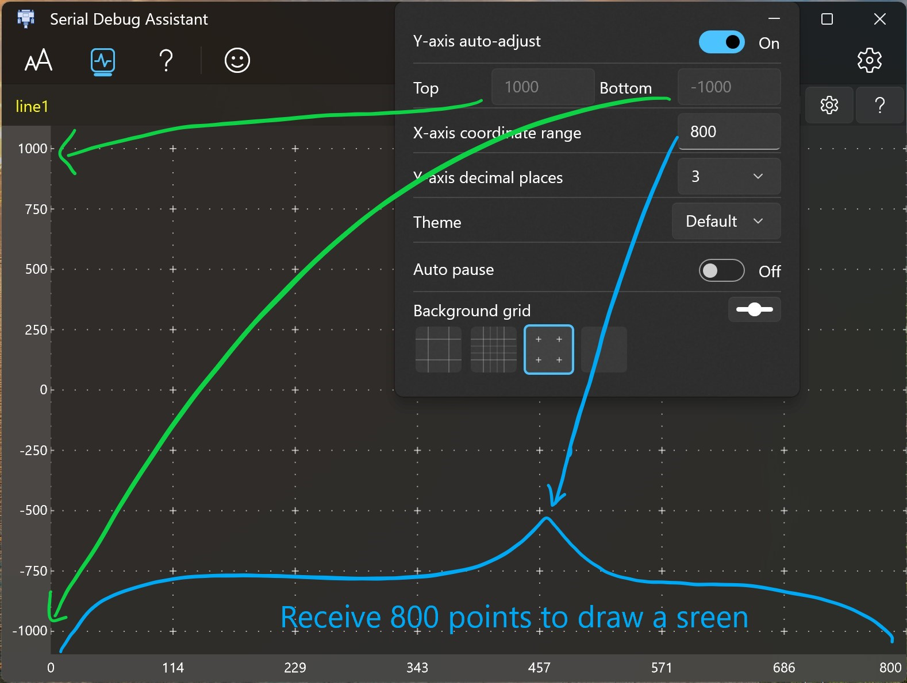

Waveform description
Add waveform information

- Enter a name for the waveform.
- Select the waveform color.
- Click the Add button.
- The waveform name you just added is displayed in the waveform list.
Draw

When the serial port receives a character string conforming to the waveform drawing format, it will be automatically drawn to the waveform interface.
Waveform format
Waveform name
Equal
Value
End character
X1
=
200
\r\n
| Waveform name | Equal | Value | End character |
|---|---|---|---|
| X1 | = | 200 | \r\n |
Use "\r\n" as the end of a drawing.
Multiple waveforms can be split using ",".
Here's the demo. Waveform name Case Sensitive
"X1=100,"
"X1=100\r\n"
"X1=100,X2=200," printf("X1=100,X2=230,");
"X1=100,X2=200\r\n" printf("X1=100,X2=230\r\n");Note that "\r\n" is used when using the print() function to represent a carriage return and line feed. In the sending area of the software, you can directly press Enter to enter a carriage return and line feed character. It is invisible but the cursor will move to the next line. You can click Hexadecimal to send and you will find that the character will have 16 decimal numbers 0D 0A.
Coordinate settings
Instructions
- The Y-axis coordinates are automatically adjusted.
on: Automatically adjust the coordinate range according to the input data.
off: You need to enter the maximum and minimum coordinates yourself. - Auto pause: When the waveform length exceeds one screen display, press the left mouse button and slide to the right to automatically start the waveform pause function, which is convenient for waveform observation.
Zoom
- Ctrl + scroll wheel -> waveform zoom.
- X + Wheel -> Zoom the X-axis coordinate range independently.
- Y + Wheel -> Zoom the Y-axis coordinate range independently.